Notebook explaining step by step how we build the compute_likelihood_map function.
[1]:
import retinoto_py as fovea
args = fovea.Params(do_fovea=True)
# args
Likelihood map on a test image¶
[2]:
import torch
from torchvision.io import read_image
true_label = 'leopard'
image_url = './images/leopard.jpg'
# image_url = './images/jaguar.jpg'
# true_label = 'tree_frog'
# image_url = './images/frog.jpg'
alpha = 1.
s_max = 100
import cmocean
cmap = cmocean.cm.haline
full_image = read_image(image_url)/255.
print(f"{type(full_image) = }, {full_image.dtype = }, {full_image.shape = }, {full_image.min()=}, {full_image.max()=}")
type(full_image) = <class 'torch.Tensor'>, full_image.dtype = torch.float32, full_image.shape = torch.Size([3, 587, 800]), full_image.min()=tensor(0.), full_image.max()=tensor(1.)
[3]:
image_size_full = 224
image_size_full = 400
from torchvision.transforms.functional import InterpolationMode, resize
three, H, W = full_image.shape
if max((H, W)) > image_size_full:
full_image = resize(full_image, image_size_full, interpolation=InterpolationMode.BILINEAR, antialias=True)
print(f"{type(full_image) = }, {full_image.dtype = }, {full_image.shape = }")
type(full_image) = <class 'torch.Tensor'>, full_image.dtype = torch.float32, full_image.shape = torch.Size([3, 400, 545])
[4]:
torch.rand(2, 3, 4)
[4]:
tensor([[[0.218, 0.286, 0.942, 0.515],
[0.600, 0.926, 0.553, 0.205],
[0.745, 0.547, 0.955, 0.622]],
[[0.576, 0.447, 0.632, 0.752],
[0.646, 0.541, 0.181, 0.367],
[0.742, 0.707, 0.810, 0.197]]])
[5]:
full_image[:, 0, 0]
[5]:
tensor([0.418, 0.384, 0.332])
Loading the test image
[6]:
full_image_np = torch.movedim(full_image, (1, 2, 0), (0, 1, 2)).numpy()
fig, ax = fovea.plt.subplots()
ax.imshow(full_image_np)
# ax.set_xticks([])
# ax.set_yticks([])
fig.set_facecolor(color='white')
Clipping input data to the valid range for imshow with RGB data ([0..1] for floats or [0..255] for integers). Got range [0.0..1.0000001].
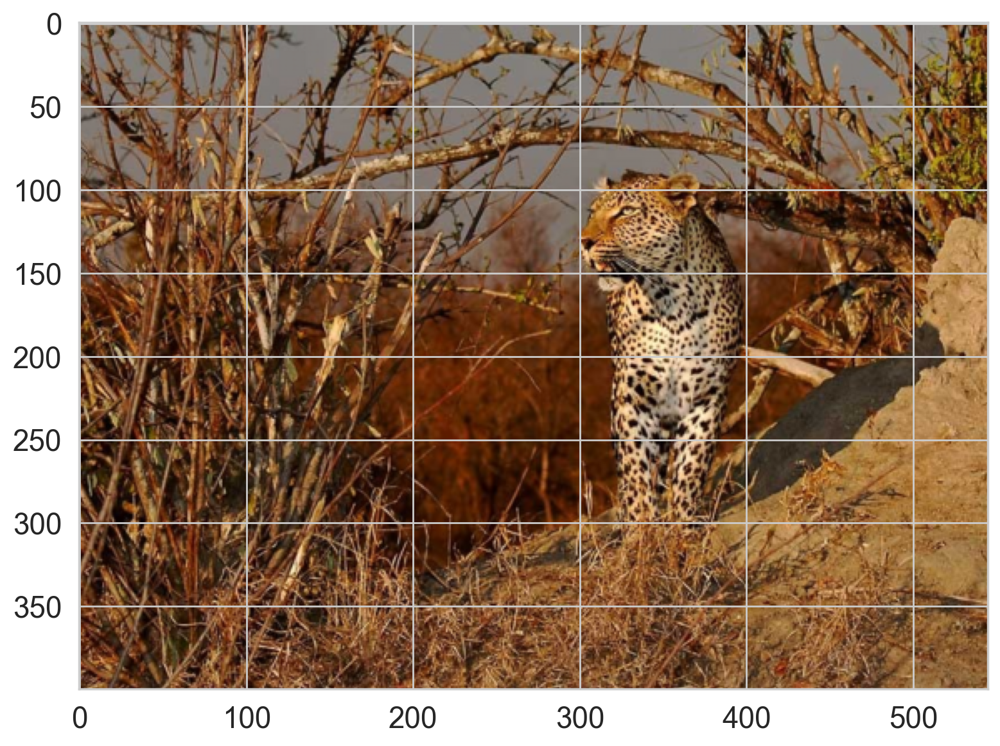
[7]:
preprocess = fovea.get_preprocess(args, do_augment=False)
# pil_image = fovea.TF.to_pil_image(full_image)
out = preprocess(full_image)
print(f"{type(out) = }, {out.dtype = }, {out.shape = }")
type(out) = <class 'torch.Tensor'>, out.dtype = torch.float32, out.shape = torch.Size([3, 161, 309])
testing fixate¶
[8]:
# image = image.squeeze()
# fig, ax = fovea.plt.subplots()
# image_np = torch.movedim(image, (1, 2, 0), (0, 1, 2)).cpu().numpy()
# ax.imshow(image_np)
[9]:
image_fix = fovea.fixate(full_image, h=130, w=325, box_size=128)
full_image.shape, image_fix.shape
[9]:
(torch.Size([3, 400, 545]), torch.Size([3, 128, 128]))
[10]:
0 <= 40 < 200
[10]:
True
[11]:
fig, ax = fovea.plt.subplots()
image_np = torch.movedim(image_fix, (1, 2, 0), (0, 1, 2)).cpu().numpy()
ax.imshow(image_np)
Clipping input data to the valid range for imshow with RGB data ([0..1] for floats or [0..255] for integers). Got range [0.0..1.0000001].
[11]:
<matplotlib.image.AxesImage at 0x130b0ead0>
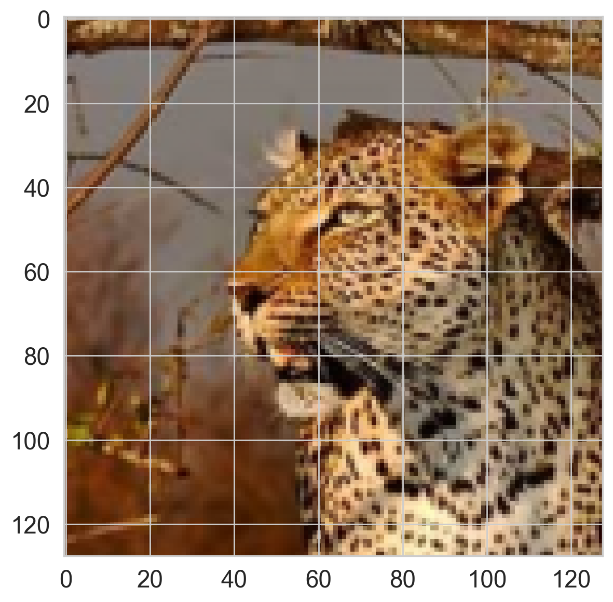
[12]:
image_fix = fovea.fixate(full_image, h=30, w=200, box_size=128)
fig, ax = fovea.plt.subplots()
image_np = torch.movedim(image_fix, (1, 2, 0), (0, 1, 2)).cpu().numpy()
ax.imshow(image_np)
[12]:
<matplotlib.image.AxesImage at 0x130c45950>
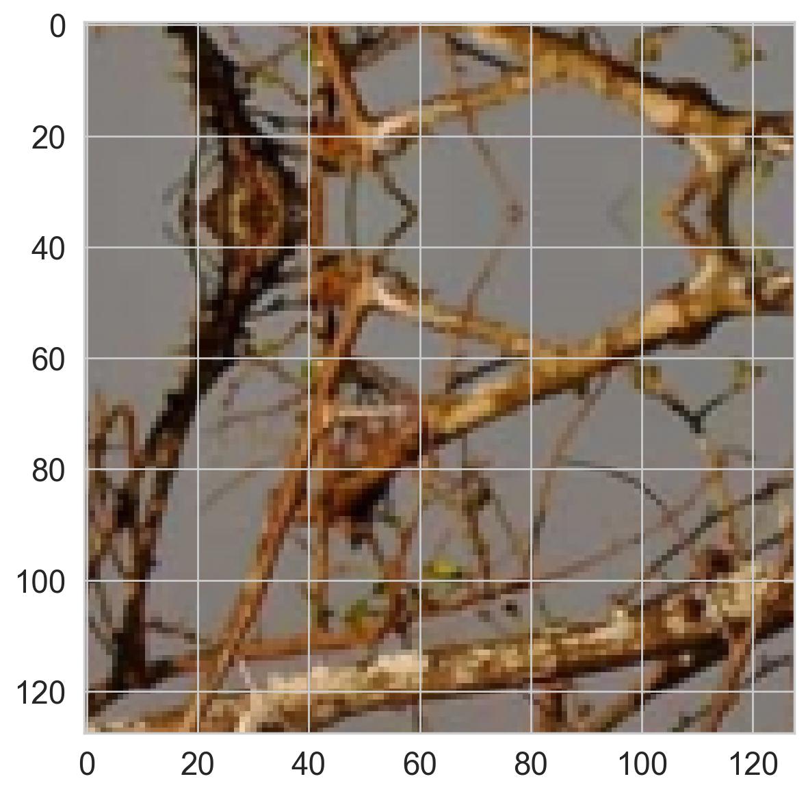
making a grid¶
First, we will define a set of fixation points as grids, that is list of horizontal and vertical coordinates. We explore different strategies.
first strategy: valid boxes¶
[13]:
import numpy as np
resolution = (15, 23) # size of the fixation grid
size_ratio = 0.3 # how much of the image to use relative to radius
three, H, W = full_image.shape
assert three == 3
max_size = np.max((H, W))
min_size = np.min((H, W))
box_size = int(min_size*size_ratio)
if H < W:
shift = (0, (W-H)/2)
else:
shift = ((H-W)/2, 0)
min_size, max_size, shift[0], shift[1], box_size
[13]:
(np.int64(400), np.int64(545), 0, 72.5, 120)
[14]:
pos_h = np.linspace(shift[0]+box_size/2, min_size+shift[0]-box_size/2, resolution[0], endpoint=True)
pos_w = np.linspace(shift[1]+box_size/2, min_size+shift[1]-box_size/2, resolution[1], endpoint=True)
pos_h, pos_w
[14]:
(array([ 60., 80., 100., 120., 140., 160., 180., 200., 220., 240., 260.,
280., 300., 320., 340.]),
array([132.5 , 145.22727273, 157.95454545, 170.68181818,
183.40909091, 196.13636364, 208.86363636, 221.59090909,
234.31818182, 247.04545455, 259.77272727, 272.5 ,
285.22727273, 297.95454545, 310.68181818, 323.40909091,
336.13636364, 348.86363636, 361.59090909, 374.31818182,
387.04545455, 399.77272727, 412.5 ]))
[15]:
pos_H, pos_W = np.meshgrid(pos_h, pos_w)
pos_H, pos_W = pos_H.ravel(), pos_W.ravel()
pos_H.shape, pos_W.shape
[15]:
((345,), (345,))
[16]:
fig, ax = fovea.plt.subplots()
ax.imshow(full_image_np)
ax.scatter(pos_W, pos_H, s=s_max, alpha=alpha)
ax.set_xticks([])
ax.set_yticks([])
fig.set_facecolor(color='white')
Clipping input data to the valid range for imshow with RGB data ([0..1] for floats or [0..255] for integers). Got range [0.0..1.0000001].
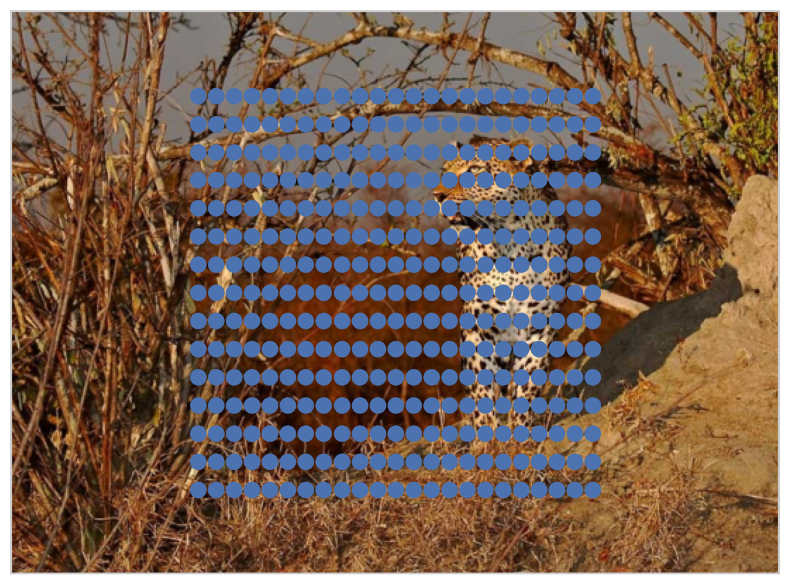
second strategy: more brutal¶
[17]:
aspect_ratio = H/W
N_fixations = np.prod(resolution)
resolution, N_fixations
[17]:
((15, 23), np.int64(345))
[18]:
resolution = (int(np.sqrt(N_fixations*aspect_ratio)), int(np.sqrt(N_fixations/aspect_ratio)))
N_fixations = np.prod(resolution)
resolution, N_fixations
[18]:
((15, 21), np.int64(315))
[19]:
pos_h = np.linspace(0, H, resolution[0]+2, endpoint=True)[1:-1]
pos_w = np.linspace(0, W, resolution[1]+2, endpoint=True)[1:-1]
pos_h, pos_w
[19]:
(array([ 25., 50., 75., 100., 125., 150., 175., 200., 225., 250., 275.,
300., 325., 350., 375.]),
array([ 24.77272727, 49.54545455, 74.31818182, 99.09090909,
123.86363636, 148.63636364, 173.40909091, 198.18181818,
222.95454545, 247.72727273, 272.5 , 297.27272727,
322.04545455, 346.81818182, 371.59090909, 396.36363636,
421.13636364, 445.90909091, 470.68181818, 495.45454545,
520.22727273]))
[20]:
pos_H, pos_W = np.meshgrid(pos_h, pos_w)
pos_H.shape, pos_W.shape
[20]:
((21, 15), (21, 15))
[21]:
pos_H, pos_W = pos_H.ravel(), pos_W.ravel()
second strategy: a regular grid with a hexagonal twist¶
[22]:
resolution
[22]:
(15, 21)
[23]:
pos_h = np.linspace(0, H, resolution[0]+2, endpoint=True)[1:-1]
pos_w = np.linspace(0, W, resolution[1]+2, endpoint=True)[1:-1]
pos_h, pos_w
[23]:
(array([ 25., 50., 75., 100., 125., 150., 175., 200., 225., 250., 275.,
300., 325., 350., 375.]),
array([ 24.77272727, 49.54545455, 74.31818182, 99.09090909,
123.86363636, 148.63636364, 173.40909091, 198.18181818,
222.95454545, 247.72727273, 272.5 , 297.27272727,
322.04545455, 346.81818182, 371.59090909, 396.36363636,
421.13636364, 445.90909091, 470.68181818, 495.45454545,
520.22727273]))
[24]:
pos_H, pos_W = np.meshgrid(pos_h, pos_w)
if resolution[0]<=resolution[1]:
delta = (pos_h[1]-pos_h[0])/4
pos_H[::2] += delta
pos_H[1::2] -= delta
else:
delta = (pos_w[1]-pos_w[0])/4
pos_W[::2] += delta
pos_W[1::2] -= delta
pos_H.shape, pos_W.shape
[24]:
((21, 15), (21, 15))
[25]:
pos_H, pos_W = pos_H.ravel(), pos_W.ravel()
pos_H.shape, pos_W.shape
[25]:
((315,), (315,))
[26]:
fig, ax = fovea.plt.subplots()
ax.imshow(full_image_np)
ax.scatter(pos_W, pos_H, s=s_max, alpha=alpha)
# ax.set_xticks([])
# ax.set_yticks([])
ax.set_xlim(0, W)
ax.set_ylim(H, 0)
fig.set_facecolor(color='white')
Clipping input data to the valid range for imshow with RGB data ([0..1] for floats or [0..255] for integers). Got range [0.0..1.0000001].
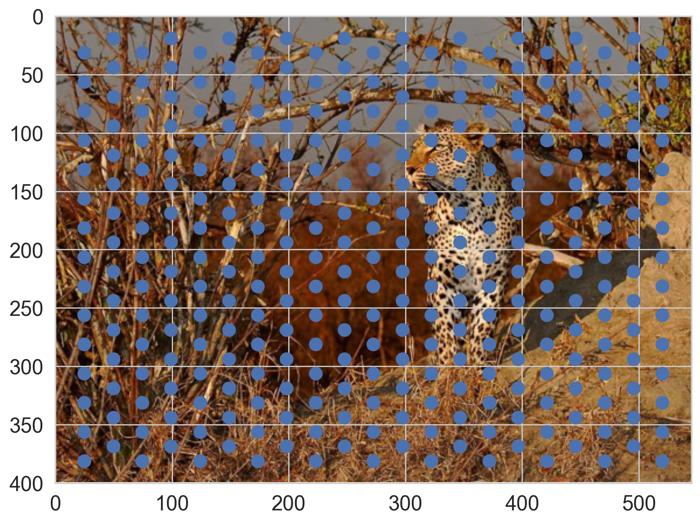
all in one function def get_positions¶
[27]:
pos_H, pos_W = fovea.get_positions(H, W, resolution=resolution)
[28]:
fig, ax = fovea.plt.subplots()
ax.imshow(full_image_np)
# ax.set_xticks([])
ax.scatter(pos_W.ravel(), pos_H.ravel(), s=s_max, alpha=alpha)
# ax.set_yticks([])
fig.set_facecolor(color='white')
Clipping input data to the valid range for imshow with RGB data ([0..1] for floats or [0..255] for integers). Got range [0.0..1.0000001].
making fixations on the positions of the grid¶
[29]:
preprocess = fovea.get_preprocess(args, do_augment=False)
out = preprocess(full_image)
print(f"{type(out) = }, {out.dtype = }, {out.shape = }")
type(out) = <class 'torch.Tensor'>, out.dtype = torch.float32, out.shape = torch.Size([3, 161, 309])
[30]:
box_size, full_image.shape, out.shape
[30]:
(120, torch.Size([3, 400, 545]), torch.Size([3, 161, 309]))
[31]:
image_size = max((box_size, args.image_size))
image_size
[31]:
224
using the fovea.fixate function¶
[32]:
%%timeit
preprocess(fovea.fixate(full_image, H//2, W//2, box_size))
639 μs ± 19 μs per loop (mean ± std. dev. of 7 runs, 1,000 loops each)
[33]:
N_fixations = len(pos_H)
gaze_images = torch.empty((N_fixations, 3, box_size, box_size))
for i_fixation, (h, w) in enumerate(zip(pos_H.ravel(), pos_W.ravel())):
h, w = int(h), int(w)
angle = np.random.rand()*360-180
gaze_images[i_fixation, ...] = fovea.fixate(full_image, h, w, box_size, angle=angle)
[34]:
gaze_images.min(), gaze_images.max()
[34]:
(tensor(0.), tensor(1.))
[35]:
fig, ax = fovea.imshow(gaze_images[0:(resolution[0]*3), ...], im_mean=0, im_std=1, nrow=resolution[0])
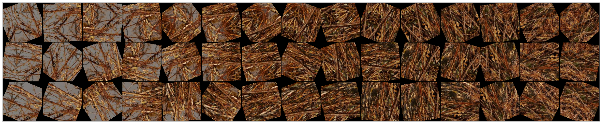
[36]:
fig, ax = fovea.imshow(gaze_images[(resolution[0]*6):(resolution[0]*9), ...], im_mean=0, im_std=1, nrow=resolution[0])
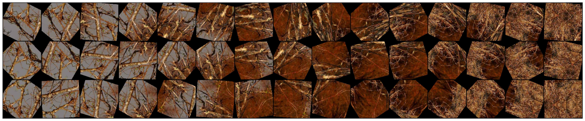
[37]:
gaze_images.shape, box_size
[37]:
(torch.Size([315, 3, 120, 120]), 120)
preprocess the batch¶
[38]:
preprocess = fovea.get_preprocess(args, do_augment=False)
gaze_image_preprocessed = preprocess(gaze_images)
[39]:
fig, ax = fovea.imshow(gaze_image_preprocessed[(resolution[0]*6):(resolution[0]*9), ...], nrow=resolution[0])
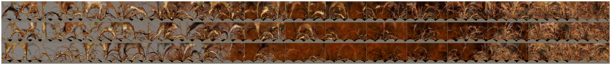
process the batch¶
[40]:
dataset = 'bbox'
model_filename = args.data_cache / f'32_fovea_model_name={args.model_name}_dataset={dataset}.pth'
model = fovea.load_model(args, model_filename=model_filename)
model_filename
[40]:
PosixPath('cached_data/32_fovea_model_name=convnext_base_dataset=bbox.pth')
[41]:
import torch.nn.functional as nnf
with torch.no_grad():
gaze_image_preprocessed = gaze_image_preprocessed.to(args.device)
probas = nnf.softmax(model(gaze_image_preprocessed), dim=1).cpu()
# probas = nnf.sigmoid(model(gaze_image_preprocessed)).cpu()
[42]:
probas.shape, probas.min(), probas.max(), probas.mean()
[42]:
(torch.Size([315, 1000]), tensor(0.000), tensor(0.998), tensor(0.001))
[43]:
idx_to_label = fovea.get_idx_to_label(args)
[44]:
proba_max, preds = torch.max(probas, dim=1)
# detect = (preds == labels.data).cpu().numpy()
for proba, pred in zip(proba_max, preds):
print(f' {idx_to_label[pred]} @ Pr={proba.item():.3f}', end ='\t')
vault @ Pr=0.444 coucal @ Pr=0.191 green_mamba @ Pr=0.136 king_crab @ Pr=0.149 green_mamba @ Pr=0.148 king_crab @ Pr=0.089 earthstar @ Pr=0.206 nail @ Pr=0.633 nail @ Pr=0.145 earthstar @ Pr=0.398 earthstar @ Pr=0.457 prayer_rug @ Pr=0.341 American_egret @ Pr=0.081 coral_fungus @ Pr=0.250 barn_spider @ Pr=0.420 fire_screen @ Pr=0.432 black_grouse @ Pr=0.129 black_grouse @ Pr=0.383 green_mamba @ Pr=0.118 pot @ Pr=0.543 green_mamba @ Pr=0.203 velvet @ Pr=0.249 nail @ Pr=0.705 earthstar @ Pr=0.355 coral_fungus @ Pr=0.099 earthstar @ Pr=0.175 coral_fungus @ Pr=0.297 earthstar @ Pr=0.159 stinkhorn @ Pr=0.246 sidewinder @ Pr=0.192 pot @ Pr=0.115 pot @ Pr=0.230 pot @ Pr=0.742 green_mamba @ Pr=0.123 ear @ Pr=0.498 earthstar @ Pr=0.142 hen-of-the-woods @ Pr=0.147 coral_fungus @ Pr=0.190 hen-of-the-woods @ Pr=0.182 ear @ Pr=0.221 coral_fungus @ Pr=0.352 stinkhorn @ Pr=0.154 earthstar @ Pr=0.201 coral_fungus @ Pr=0.645 sidewinder @ Pr=0.237 leopard @ Pr=0.104 drumstick @ Pr=0.037 steel_arch_bridge @ Pr=0.257 pot @ Pr=0.313 plastic_bag @ Pr=0.163 spider_web @ Pr=0.123 barn_spider @ Pr=0.285 hen-of-the-woods @ Pr=0.078 cliff @ Pr=0.766 walking_stick @ Pr=0.201 coral_fungus @ Pr=0.092 beaver @ Pr=0.318 earthstar @ Pr=0.070 thatch @ Pr=0.072 earthstar @ Pr=0.253 lakeside @ Pr=0.154 black_grouse @ Pr=0.118 pot @ Pr=0.799 lakeside @ Pr=0.407 earthstar @ Pr=0.482 walking_stick @ Pr=0.153 ear @ Pr=0.237 weasel @ Pr=0.158 cliff @ Pr=0.253 ruffed_grouse @ Pr=0.334 bittern @ Pr=0.162 English_setter @ Pr=0.054 pot @ Pr=0.119 rock_python @ Pr=0.401 pot @ Pr=0.111 leopard @ Pr=0.402 pot @ Pr=0.139 pot @ Pr=0.583 plastic_bag @ Pr=0.138 pot @ Pr=0.122 walking_stick @ Pr=0.539 spider_web @ Pr=0.223 weasel @ Pr=0.275 cliff @ Pr=0.173 European_fire_salamander @ Pr=0.220 stinkhorn @ Pr=0.115 lakeside @ Pr=0.130 beaver @ Pr=0.147 pot @ Pr=0.111 velvet @ Pr=0.270 leopard @ Pr=0.220 langur @ Pr=0.431 brambling @ Pr=0.150 king_crab @ Pr=0.147 langur @ Pr=0.203 walking_stick @ Pr=0.350 barn_spider @ Pr=0.135 spider_web @ Pr=0.768 black_grouse @ Pr=0.123 weasel @ Pr=0.080 barn_spider @ Pr=0.202 barn_spider @ Pr=0.517 pot @ Pr=0.567 velvet @ Pr=0.170 hay @ Pr=0.331 leopard @ Pr=0.200 black_grouse @ Pr=0.198 langur @ Pr=0.342 gar @ Pr=0.278 brambling @ Pr=0.261 pot @ Pr=0.119 walking_stick @ Pr=0.852 velvet @ Pr=0.261 spider_web @ Pr=0.307 cliff @ Pr=0.412 spider_web @ Pr=0.777 spider_web @ Pr=0.538 Irish_setter @ Pr=0.107 lakeside @ Pr=0.191 lakeside @ Pr=0.072 black_grouse @ Pr=0.131 langur @ Pr=0.310 pole @ Pr=0.129 black_grouse @ Pr=0.280 king_crab @ Pr=0.356 langur @ Pr=0.456 lion @ Pr=0.373 lion @ Pr=0.635 gazelle @ Pr=0.190 barn_spider @ Pr=0.126 lion @ Pr=0.097 lion @ Pr=0.092 hartebeest @ Pr=0.135 spider_web @ Pr=0.107 hay @ Pr=0.159 indri @ Pr=0.398 brambling @ Pr=0.087 colobus @ Pr=0.083 black_grouse @ Pr=0.496 langur @ Pr=0.139 cliff @ Pr=0.181 lakeside @ Pr=0.081 gazelle @ Pr=0.071 gazelle @ Pr=0.246 red_wolf @ Pr=0.218 barn_spider @ Pr=0.452 black_grouse @ Pr=0.606 hartebeest @ Pr=0.169 lion @ Pr=0.221 doormat @ Pr=0.114 brambling @ Pr=0.214 leopard @ Pr=0.348 leopard @ Pr=0.825 tiger @ Pr=0.515 leopard @ Pr=0.179 leopard @ Pr=0.586 volcano @ Pr=0.212 cheetah @ Pr=0.306 leopard @ Pr=0.616 leopard @ Pr=0.839 cheetah @ Pr=0.923 red_wolf @ Pr=0.226 black_grouse @ Pr=0.116 Brittany_spaniel @ Pr=0.168 prayer_rug @ Pr=0.624 fire_screen @ Pr=0.239 black_grouse @ Pr=0.328 buckeye @ Pr=0.148 cheetah @ Pr=0.148 leopard @ Pr=0.787 leopard @ Pr=0.911 leopard @ Pr=0.967 leopard @ Pr=0.693 cheetah @ Pr=0.863 cheetah @ Pr=0.941 leopard @ Pr=0.398 cheetah @ Pr=0.847 leopard @ Pr=0.937 leopard @ Pr=0.326 velvet @ Pr=0.852 pot @ Pr=0.081 leopard @ Pr=0.976 leopard @ Pr=0.994 cheetah @ Pr=0.826 cheetah @ Pr=0.864 leopard @ Pr=0.818 leopard @ Pr=0.633 cheetah @ Pr=0.741 cheetah @ Pr=0.477 cheetah @ Pr=0.760 cheetah @ Pr=0.753 leopard @ Pr=0.692 cheetah @ Pr=0.844 velvet @ Pr=0.329 prayer_rug @ Pr=0.743 nematode @ Pr=0.089 pot @ Pr=0.247 leopard @ Pr=0.998 leopard @ Pr=0.853 leopard @ Pr=0.931 leopard @ Pr=0.895 leopard @ Pr=0.939 leopard @ Pr=0.885 cheetah @ Pr=0.879 cheetah @ Pr=0.602 cheetah @ Pr=0.772 cheetah @ Pr=0.341 leopard @ Pr=0.664 hay @ Pr=0.532 lakeside @ Pr=0.327 broom @ Pr=0.251 leopard @ Pr=0.160 leopard @ Pr=0.687 leopard @ Pr=0.989 leopard @ Pr=0.927 leopard @ Pr=0.362 leopard @ Pr=0.884 leopard @ Pr=0.590 cheetah @ Pr=0.485 leopard @ Pr=0.448 cheetah @ Pr=0.449 leopard @ Pr=0.708 coyote @ Pr=0.050 pot @ Pr=0.108 prayer_rug @ Pr=0.769 pot @ Pr=0.768 pot @ Pr=0.149 pot @ Pr=0.791 cheetah @ Pr=0.789 leopard @ Pr=0.729 leopard @ Pr=0.569 leopard @ Pr=0.730 leopard @ Pr=0.497 leopard @ Pr=0.305 leopard @ Pr=0.777 leopard @ Pr=0.451 leopard @ Pr=0.416 leopard @ Pr=0.818 cliff @ Pr=0.093 prayer_rug @ Pr=0.730 pot @ Pr=0.271 pot @ Pr=0.685 king_crab @ Pr=0.256 coral_reef @ Pr=0.170 leopard @ Pr=0.650 slug @ Pr=0.467 cheetah @ Pr=0.314 slug @ Pr=0.322 common_newt @ Pr=0.172 cheetah @ Pr=0.524 leopard @ Pr=0.769 valley @ Pr=0.228 sidewinder @ Pr=0.056 prayer_rug @ Pr=0.377 prayer_rug @ Pr=0.079 brambling @ Pr=0.208 king_crab @ Pr=0.365 brambling @ Pr=0.884 coral_reef @ Pr=0.103 coral_reef @ Pr=0.216 spiny_lobster @ Pr=0.118 stinkhorn @ Pr=0.231 Indian_cobra @ Pr=0.117 leopard @ Pr=0.440 common_newt @ Pr=0.378 horned_viper @ Pr=0.416 banded_gecko @ Pr=0.303 ant @ Pr=0.190 prayer_rug @ Pr=0.380 honeycomb @ Pr=0.302 pot @ Pr=0.399 brambling @ Pr=0.575 earthstar @ Pr=0.260 sidewinder @ Pr=0.197 coral_reef @ Pr=0.655 hognose_snake @ Pr=0.162 king_crab @ Pr=0.296 stinkhorn @ Pr=0.504 common_newt @ Pr=0.893 French_loaf @ Pr=0.577 ant @ Pr=0.181 French_loaf @ Pr=0.482 badger @ Pr=0.154 spiny_lobster @ Pr=0.170 barn_spider @ Pr=0.169 langur @ Pr=0.081 black_grouse @ Pr=0.080 lakeside @ Pr=0.191 pot @ Pr=0.947 earthstar @ Pr=0.255 hen-of-the-woods @ Pr=0.831 meat_loaf @ Pr=0.348 cockroach @ Pr=0.368 stinkhorn @ Pr=0.605 electric_ray @ Pr=0.144 dough @ Pr=0.388 cliff @ Pr=0.466 vault @ Pr=0.412 velvet @ Pr=0.388 hartebeest @ Pr=0.117 lakeside @ Pr=0.138 lakeside @ Pr=0.324 coral_reef @ Pr=0.188 hen-of-the-woods @ Pr=0.585 stinkhorn @ Pr=0.334 hen-of-the-woods @ Pr=0.651 cliff @ Pr=0.833 meat_loaf @ Pr=0.527 cliff @ Pr=0.615 cliff @ Pr=0.447 French_loaf @ Pr=0.584 cliff @ Pr=0.202 common_newt @ Pr=0.432 common_newt @ Pr=0.304 prayer_rug @ Pr=0.620
[45]:
true_label
[45]:
'leopard'
[46]:
label2idx = fovea.get_label_to_idx(args)
label2idx[true_label]
[46]:
288
[47]:
fig, ax = fovea.plt.subplots()
ax.imshow(full_image_np)
# ax.set_xticks([])
proba_label = probas[:, label2idx[true_label]]
idx_max = proba_label.argmax()
scatter = ax.scatter(pos_W, pos_H, s=proba_label*s_max, c=proba_label, alpha=alpha, edgecolors='none', cmap=cmap, vmin=0, vmax=1)
print('Min proba_label =', min(proba_label))
print(f'Max proba_label ={max(proba_label).item():.3f}')
ax.scatter(pos_W[idx_max], pos_H[idx_max], s=proba_label[idx_max]*s_max, marker='*', c='red', alpha=alpha)
fig.colorbar(scatter, ax=ax) # Add colorbar
# ax.scatter(500, 100, s=1000, c='r')
# ax.set_yticks([])
fig.set_facecolor(color='white')
Clipping input data to the valid range for imshow with RGB data ([0..1] for floats or [0..255] for integers). Got range [0.0..1.0000001].
Min proba_label = tensor(0.000)
Max proba_label =0.998
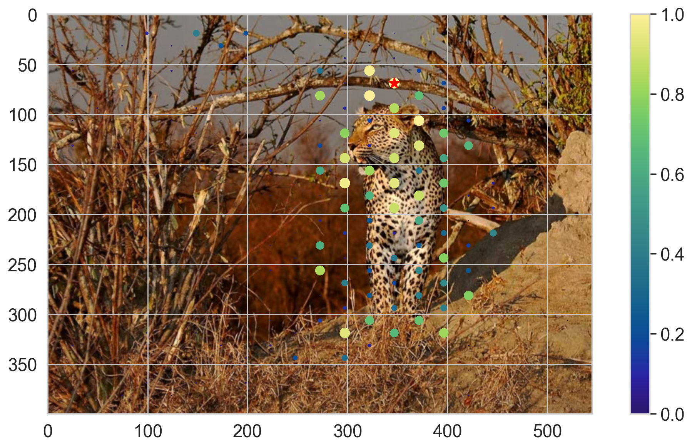
[48]:
proba_label.shape, pos_W.ravel().shape, idx_max
[48]:
(torch.Size([315]), (315,), tensor(197))
as a function fovea.compute_likelihood_map¶
[49]:
N_fixations, N_batch = 100, 32
[50]:
for idx in np.arange(0, N_fixations, N_batch):
print(idx, np.min((idx+N_batch, N_fixations)))
0 32
32 64
64 96
96 100
comparing mappings¶
[51]:
# data_set_type = 'bbox'
# model_name = 'resnet101'
[52]:
three, H, W = full_image.shape
assert three == 3
pos_H, pos_W = fovea.get_positions(H, W, resolution=resolution)
probas = fovea.compute_likelihood_map(args, model, full_image, pos_H, pos_W, size_ratio=size_ratio)
proba = proba.cpu()
[53]:
probas.shape, pos_H.shape
[53]:
(torch.Size([315, 1000]), (315,))
[54]:
proba_label = probas[:, label2idx[true_label]].cpu()
proba_label
[54]:
tensor([0.001, 0.002, 0.002, 0.001, 0.001, 0.001, 0.000, 0.000, 0.000, 0.000, 0.000, 0.002, 0.016, 0.002, 0.032, 0.000, 0.000, 0.004, 0.000,
0.000, 0.000, 0.000, 0.000, 0.000, 0.000, 0.001, 0.001, 0.001, 0.110, 0.002, 0.010, 0.001, 0.013, 0.003, 0.001, 0.002, 0.000, 0.001,
0.000, 0.001, 0.001, 0.033, 0.001, 0.010, 0.006, 0.004, 0.003, 0.002, 0.003, 0.001, 0.003, 0.001, 0.000, 0.000, 0.002, 0.000, 0.001,
0.010, 0.436, 0.051, 0.007, 0.003, 0.011, 0.003, 0.000, 0.000, 0.001, 0.001, 0.000, 0.001, 0.006, 0.001, 0.002, 0.003, 0.001, 0.028,
0.002, 0.005, 0.002, 0.005, 0.002, 0.038, 0.002, 0.000, 0.002, 0.007, 0.033, 0.006, 0.019, 0.001, 0.007, 0.006, 0.000, 0.005, 0.004,
0.007, 0.001, 0.004, 0.024, 0.001, 0.002, 0.000, 0.017, 0.005, 0.000, 0.129, 0.016, 0.001, 0.008, 0.001, 0.015, 0.006, 0.017, 0.006,
0.002, 0.001, 0.001, 0.002, 0.032, 0.004, 0.013, 0.012, 0.002, 0.001, 0.014, 0.001, 0.013, 0.007, 0.048, 0.005, 0.004, 0.003, 0.011,
0.002, 0.015, 0.002, 0.012, 0.004, 0.239, 0.170, 0.002, 0.005, 0.037, 0.031, 0.006, 0.003, 0.009, 0.013, 0.012, 0.005, 0.007, 0.037,
0.689, 0.948, 0.916, 0.996, 0.844, 0.586, 0.376, 0.956, 0.217, 0.096, 0.717, 0.009, 0.000, 0.035, 0.098, 0.999, 0.984, 0.998, 0.992,
0.996, 0.944, 0.764, 0.802, 0.706, 0.766, 0.057, 0.722, 0.000, 0.032, 0.998, 0.999, 0.997, 0.998, 0.949, 0.972, 0.829, 0.445, 0.232,
0.772, 0.659, 0.556, 0.072, 0.001, 0.011, 0.881, 0.996, 0.999, 0.997, 0.994, 0.984, 0.823, 0.938, 0.394, 0.658, 0.626, 0.919, 0.676,
0.000, 0.018, 0.989, 0.997, 0.999, 0.997, 0.992, 0.985, 0.899, 0.310, 0.771, 0.262, 0.916, 0.255, 0.012, 0.002, 0.110, 0.067, 0.912,
0.981, 0.937, 0.984, 0.994, 0.965, 0.941, 0.994, 0.939, 0.838, 0.357, 0.907, 0.006, 0.001, 0.070, 0.849, 0.998, 0.564, 0.925, 0.990,
0.900, 0.995, 0.394, 0.662, 0.420, 0.973, 0.018, 0.001, 0.005, 0.005, 0.005, 0.823, 0.855, 0.041, 0.368, 0.949, 0.322, 0.091, 0.023,
0.018, 0.001, 0.009, 0.002, 0.007, 0.003, 0.001, 0.006, 0.000, 0.002, 0.000, 0.001, 0.000, 0.001, 0.000, 0.000, 0.001, 0.000, 0.001,
0.004, 0.012, 0.003, 0.000, 0.004, 0.001, 0.000, 0.000, 0.000, 0.001, 0.000, 0.002, 0.000, 0.001, 0.000, 0.006, 0.002, 0.001, 0.004,
0.000, 0.000, 0.000, 0.000, 0.000, 0.000, 0.000, 0.000, 0.000, 0.000, 0.007])
[55]:
idx_max = proba_label.argmax()
idx_max, pos_W[idx_max], pos_H[idx_max]
[55]:
(tensor(198), np.float64(346.8181818181818), np.float64(93.75))
[56]:
def plot_map(size_ratio):
pos_H, pos_W = fovea.get_positions(H, W, resolution=resolution)
probas = fovea.compute_likelihood_map(args, model, full_image, pos_H, pos_W, size_ratio=size_ratio, do_softmax=True)
probas = probas.cpu()
proba_label = probas[:, label2idx[true_label]]
idx_max = proba_label.argmax()
fig, ax = fovea.plt.subplots()
ax.imshow(full_image_np)
scatter = ax.scatter(pos_W, pos_H, s=proba_label*s_max, c=proba_label, alpha=alpha, edgecolors='none', cmap=cmap, vmin=0, vmax=1)
print(f'Max proba_label ={max(proba_label).item():.3f}')
idx_max = proba_label.argmax()
ax.scatter(pos_W[idx_max], pos_H[idx_max], s=proba_label[idx_max]*s_max, marker='*', c='red', alpha=alpha)
fig.colorbar(scatter, ax=ax) # Add colorbar
fig.set_facecolor(color='white')
return fig, ax
fig, ax = plot_map(size_ratio=size_ratio)
Clipping input data to the valid range for imshow with RGB data ([0..1] for floats or [0..255] for integers). Got range [0.0..1.0000001].
Max proba_label =0.999
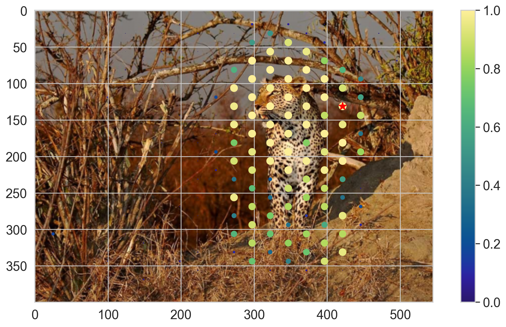
[57]:
for size_ratio in [.1, .2, .5, .618, .8]:
print(50 * "=")
print(f"size_ratio = {size_ratio}")
fig, ax = plot_map(size_ratio=size_ratio)
fovea.plt.show()
==================================================
size_ratio = 0.1
Clipping input data to the valid range for imshow with RGB data ([0..1] for floats or [0..255] for integers). Got range [0.0..1.0000001].
Max proba_label =0.965
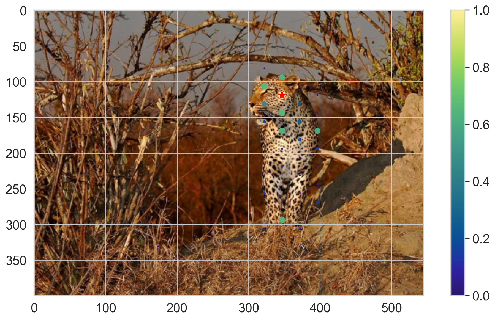
==================================================
size_ratio = 0.2
Clipping input data to the valid range for imshow with RGB data ([0..1] for floats or [0..255] for integers). Got range [0.0..1.0000001].
Max proba_label =0.999
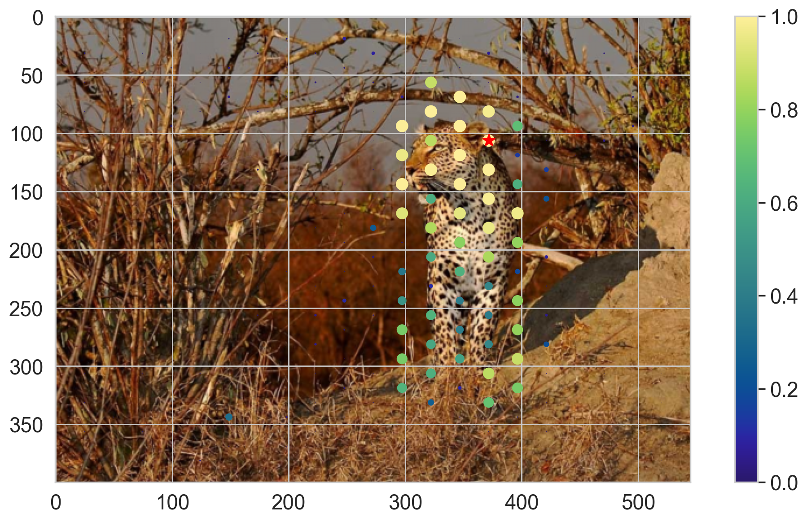
==================================================
size_ratio = 0.5
Clipping input data to the valid range for imshow with RGB data ([0..1] for floats or [0..255] for integers). Got range [0.0..1.0000001].
Max proba_label =1.000
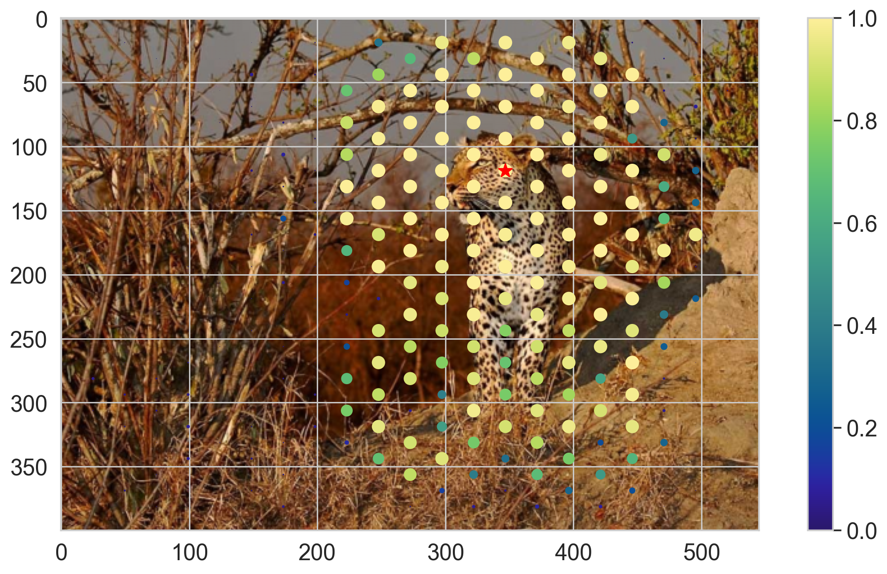
==================================================
size_ratio = 0.618
Clipping input data to the valid range for imshow with RGB data ([0..1] for floats or [0..255] for integers). Got range [0.0..1.0000001].
Max proba_label =1.000
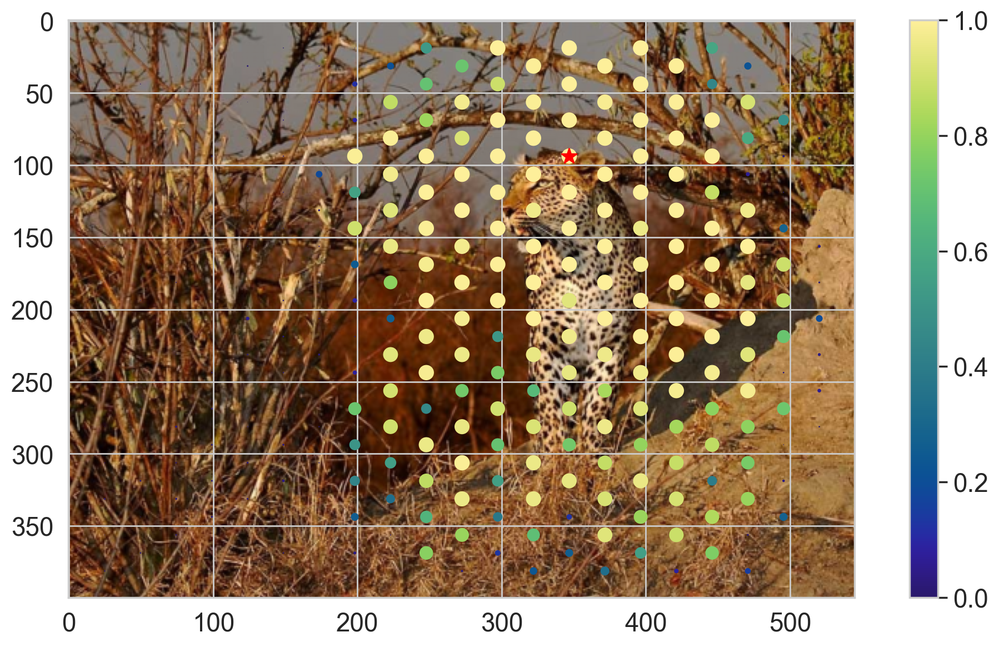
==================================================
size_ratio = 0.8
Clipping input data to the valid range for imshow with RGB data ([0..1] for floats or [0..255] for integers). Got range [0.0..1.0000001].
Max proba_label =1.000
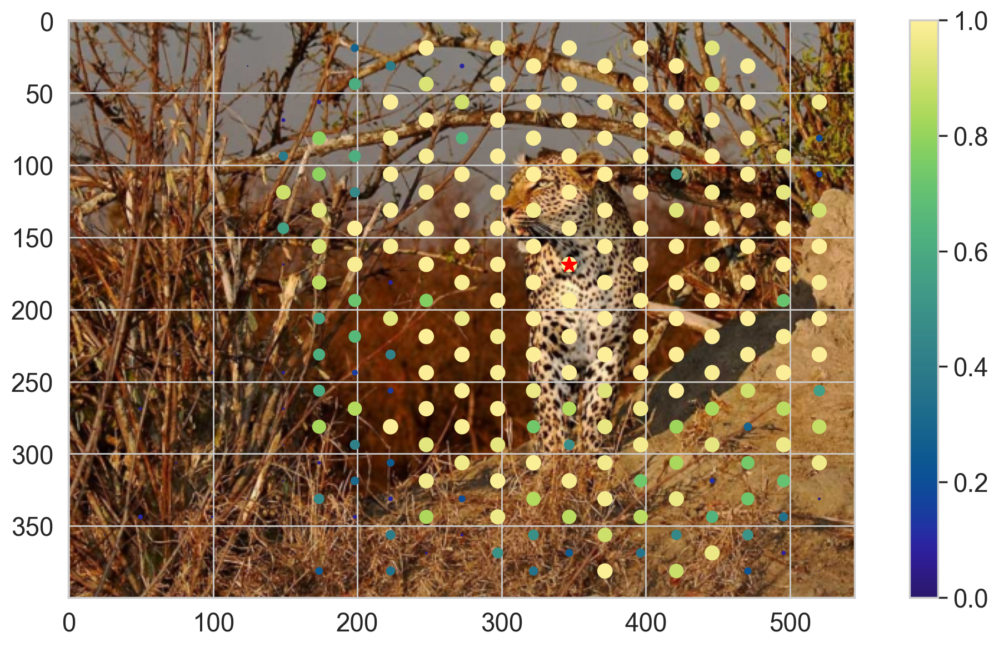
combining different mappings¶
the response should be rotation and zoom invariant, so we can combine different mappings with different angles and size ratios
[58]:
pos_H.shape, proba_label.shape
[58]:
((315,), torch.Size([315]))
[59]:
def plot_map(size_ratios):
pos_H, pos_W = fovea.get_positions(H, W, resolution=resolution)
proba_label = None
for size_ratio in size_ratios:
probas = fovea.compute_likelihood_map(args, model, full_image, pos_H, pos_W, size_ratio=size_ratio, do_softmax=True)
probas = probas.cpu()
proba_label_ = probas[:, label2idx[true_label]]
if proba_label is None:
proba_label = proba_label_
else:
proba_label += proba_label_
proba_label = proba_label / len(size_ratios)
idx_max = proba_label.argmax()
fig, ax = fovea.plt.subplots()
ax.imshow(full_image_np)
scatter = ax.scatter(pos_W, pos_H, s=proba_label*s_max, c=proba_label, alpha=alpha, edgecolors='none', cmap=cmap, vmin=0, vmax=1)
print(f'Max proba_label ={max(proba_label).item():.3f}')
idx_max = proba_label.argmax()
ax.scatter(pos_W[idx_max], pos_H[idx_max], s=proba_label[idx_max]*s_max, marker='*', c='red', alpha=alpha)
fig.colorbar(scatter, ax=ax) # Add colorbar
fig.set_facecolor(color='white')
return fig, ax
# size_ratios = [.1, .2, .5, .618, .8]
size_ratios = np.linspace(0.1, 0.9, 9)
fig, ax = plot_map(size_ratios=size_ratios)
Clipping input data to the valid range for imshow with RGB data ([0..1] for floats or [0..255] for integers). Got range [0.0..1.0000001].
Max proba_label =0.990
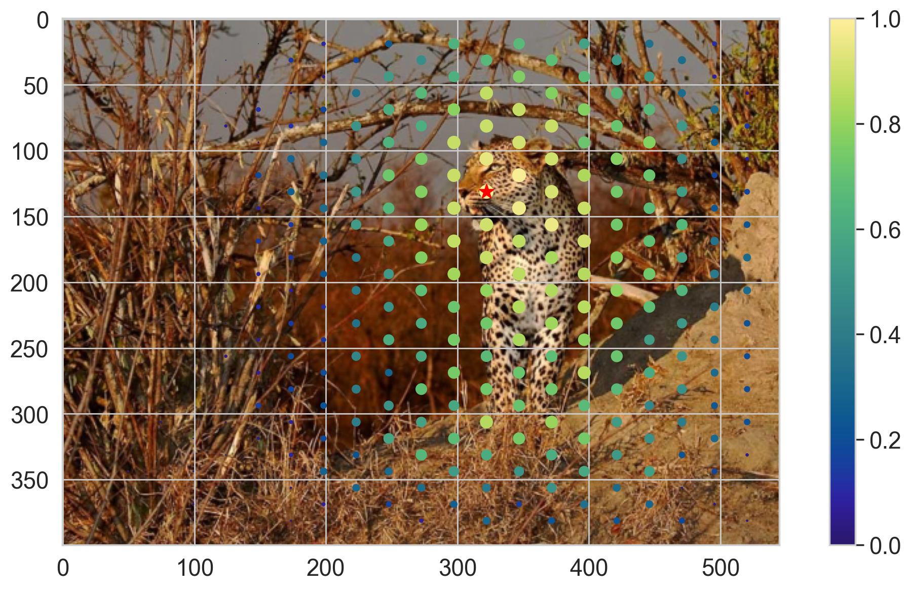
[60]:
def plot_map(size_ratios, angles):
pos_H, pos_W = fovea.get_positions(H, W, resolution=resolution)
proba_label, proba_label_max = None, 0.
size_ratio_max = size_ratios[0]
for size_ratio in size_ratios:
for angle in angles:
probas = fovea.compute_likelihood_map(args, model, full_image, pos_H, pos_W, size_ratio=size_ratio, angle=angle, do_softmax=True)
probas = probas.cpu()
proba_label_ = probas[:, label2idx[true_label]]
if proba_label_.max() > proba_label_max:
proba_label_max = proba_label_.max()
size_ratio_max = size_ratio
if proba_label is None:
proba_label = proba_label_
else:
proba_label = torch.maximum(proba_label, proba_label_)
print('size_ratio_max', size_ratio_max)
idx_max = proba_label.argmax()
fig, ax = fovea.plt.subplots()
ax.imshow(full_image_np)
scatter = ax.scatter(pos_W, pos_H, s=proba_label*s_max, c=proba_label, alpha=alpha, edgecolors='none', cmap=cmap, vmin=0, vmax=1)
print(f'Max proba_label ={max(proba_label).item():.3f}')
idx_max = proba_label.argmax()
ax.scatter(pos_W[idx_max], pos_H[idx_max], s=proba_label[idx_max]*s_max, marker='*', c='red', alpha=alpha)
fig.colorbar(scatter, ax=ax) # Add colorbar
fig.set_facecolor(color='white')
return fig, ax
angles = [0, 45, 90, 135, 180, 225, 270, 315]
angles = [0, 90, 180, 270]
fig, ax = plot_map(size_ratios=size_ratios, angles=angles)
Clipping input data to the valid range for imshow with RGB data ([0..1] for floats or [0..255] for integers). Got range [0.0..1.0000001].
size_ratio_max 0.9
Max proba_label =1.000
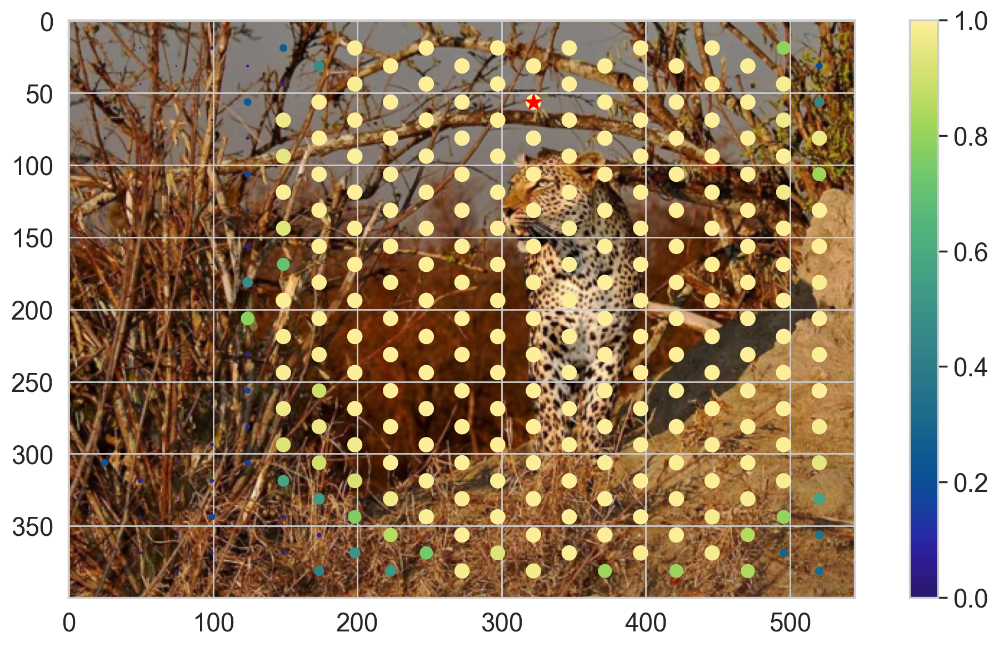
[61]:
def plot_map(size_ratios, angles):
pos_H, pos_W = fovea.get_positions(H, W, resolution=resolution)
proba_label, proba_label_max = None, 0.
size_ratio_max = size_ratios[0]
for size_ratio in size_ratios:
for angle in angles:
probas = fovea.compute_likelihood_map(args, model, full_image, pos_H, pos_W, size_ratio=size_ratio, angle=angle, do_softmax=True)
probas = probas.cpu()
proba_label_ = probas[:, label2idx[true_label]]
if proba_label_.max() > proba_label_max:
proba_label_max = proba_label_.max()
size_ratio_max = size_ratio
if proba_label is None:
proba_label = proba_label_
else:
proba_label += proba_label_
proba_label = proba_label / len(size_ratios) / len(angles)
idx_max = proba_label.argmax()
fig, ax = fovea.plt.subplots()
ax.imshow(full_image_np)
scatter = ax.scatter(pos_W, pos_H, s=proba_label*s_max, c=proba_label, alpha=alpha, edgecolors='none', cmap=cmap, vmin=0, vmax=1)
print(f'Max proba_label ={max(proba_label).item():.3f}')
idx_max = proba_label.argmax()
ax.scatter(pos_W[idx_max], pos_H[idx_max], s=proba_label[idx_max]*s_max, marker='*', c='red', alpha=alpha)
fig.colorbar(scatter, ax=ax) # Add colorbar
fig.set_facecolor(color='white')
return fig, ax
# size_ratios = [.1, .2, .5, .618, .8]
# size_ratios = np.linspace(0.1, 0.9, 9)
fig, ax = plot_map(size_ratios=size_ratios, angles=angles)
Clipping input data to the valid range for imshow with RGB data ([0..1] for floats or [0..255] for integers). Got range [0.0..1.0000001].
Max proba_label =0.939
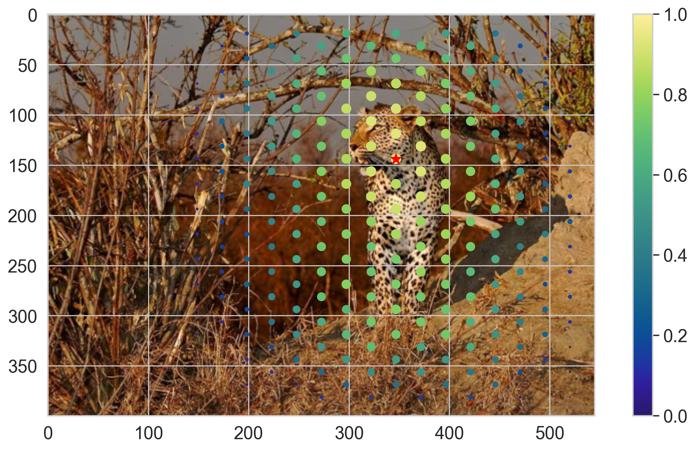
[62]:
fig, ax = plot_map(size_ratios=size_ratios, angles=[0, 60, 120])
Clipping input data to the valid range for imshow with RGB data ([0..1] for floats or [0..255] for integers). Got range [0.0..1.0000001].
Max proba_label =0.893
[63]:
# fig, ax = plot_map(size_ratios=np.linspace(0.3, 0.9, 5), angles=angles)
[64]:
# fig, ax = plot_map(size_ratios=np.linspace(0.1, 0.6, 5), angles=angles)
[65]:
fig, ax = plot_map(size_ratios=[0.1, 0.2, 0.4, 0.6, 0.9], angles=angles)
Clipping input data to the valid range for imshow with RGB data ([0..1] for floats or [0..255] for integers). Got range [0.0..1.0000001].
Max proba_label =0.963
[66]:
fig, ax = plot_map(size_ratios=size_ratios, angles=[0, 90, 180])
Clipping input data to the valid range for imshow with RGB data ([0..1] for floats or [0..255] for integers). Got range [0.0..1.0000001].
Max proba_label =0.950
[67]:
fig, ax = plot_map(size_ratios=size_ratios, angles=[0, 90, 180, 270])
Clipping input data to the valid range for imshow with RGB data ([0..1] for floats or [0..255] for integers). Got range [0.0..1.0000001].
Max proba_label =0.942
[68]:
# fig, ax = plot_map(size_ratios=size_ratios, angles=[0, 60, -30])
Voilà !